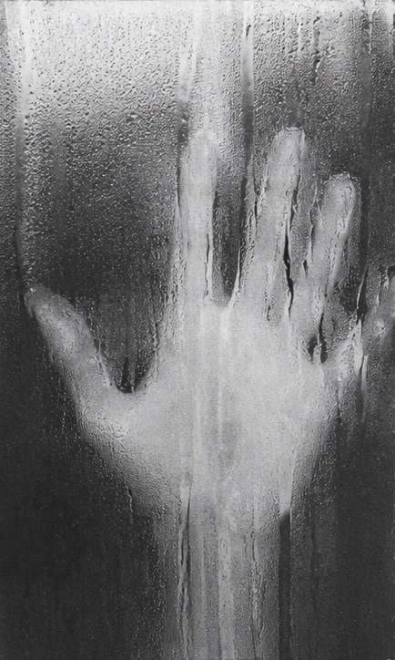

FEELFORM S-02 / PHYSICAL SENSATIONEXPERIMENT IN PROGRESS
RECORD 02 / THE BODY
TOUCH.
WHAT DOES SPRING FEEL LIKE ON YOUR SKIN?

WIPE THE FOG TO SEE SPRING
MOVE YOUR CURSOR OR DRAG YOUR FINGER
MOVE YOUR CURSOR OR DRAG YOUR FINGER
SELECT A SENSATION
OBSERVATION
CHOOSE ONE TO BEGIN.
FIELD NOTE
TOUCH CAN BRING BACK A SEASON BEFORE WE EVEN REALIZE IT.
METHOD
MOVE / SELECT / OBSERVE